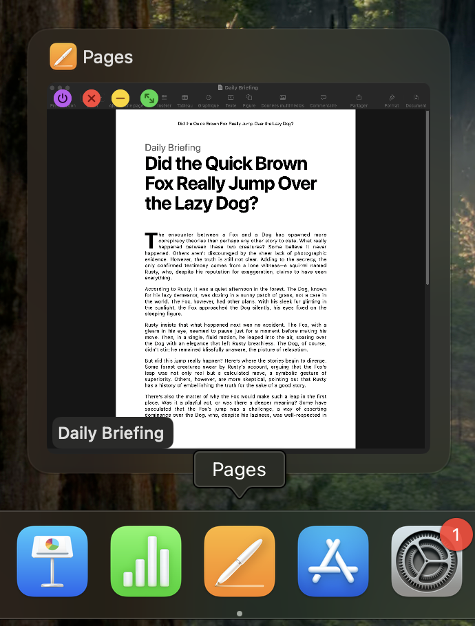

Home Download FAQ View on GitHub
A new way of interacting with the Dock.
DockDoor is the only free and open-source application that lets you easily switch between windows on macOS.
Available for macOS 14 and newer.
Manage windows and applications directly from the previews.
You can close, minimize, maximize windows, and quit applications.
DockDoor supports multiple windows per app.

Hold ⌥ (Option key) while clicking the Quit button to force quit the currently previewed app.

Customize everything you want.
Choose where you want to see the traffic light buttons and the window title.
DockDoor also provides options for the app title style.
🌔 Also available in dark mode. 🦉
Download DockDoor now!
DockDoor is free and open-source. Its source code is available on GitHub. View it here.


Thanks to you, DockDoor is already available in more than 10 languages! If you want to contribute translating the app in yours, do not hesitate!
If you like this application, please consider donating to the developer. Thank you!
Frequently Asked Questions
How to use the Dock peek feature?
How to force quit an application?
What is the window switcher?
To switch between windows, hold down the Command (⌘) key and press the Tab (⇥) key repeatedly until the desired window is highlighted. Release both keys to switch to the selected window.
If you want to set your own keybind, you can disable the
Use default macOS keybind ⌘ + ⇥option in the
Window Switchertab. Then, choose one of modifier keys (⌃, ⌥, or ⌘), click on
Record keybindand press the key you want to associate with the previously selected modifier key.
How to access DockDoor’s settings window?
Show Menu Bar Iconoption in the
Generaltab, search for "DockDoor" using Spotlight and select the application. The settings window should appear.
If not, simply click on the menu bar icon and select
Open Settings. The settings window should appear.